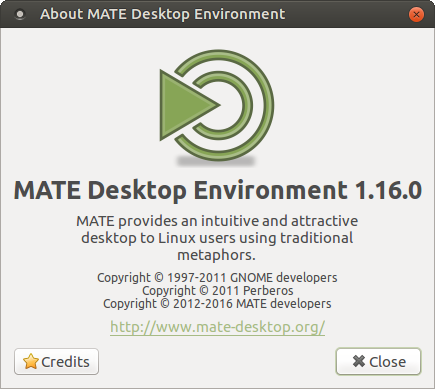

MATE 1.16 released
After 6 months of development the MATE Desktop team are proud to announce the release of MATE Desktop 1.16. We’d like to thank every MATE contributor for their help making this release possible.

What’s new in MATE 1.16
The release is focused on improving GTK3+ compatibility, migrating components to newer libraries, fixing bugs and code hygiene. The headline changes in MATE Desktop 1.16 are:
- Improved GTK+3 support across the entire MATE Desktop.
- Application and theme support for GTK+ 3.22.
- More applications build against GTK+3 only:
- Engrampa
- MATE Notification Daemon
- MATE PolKit
- MATE Session Manager
- MATE Terminal
- Some applications have been decoupled from
libmate-desktop:- Engrampa
- MATE Applets
- MATE Netbook
- MATE Power Manager
- MATE Terminal
- Pluma
- Work has started to port applications to GApplication or GtkApplication:
- Engrampa
- MATE Applets
- MATE Netbook
- MATE User Share
- Many bugs and deprecations are fixed.
- Translations are updated. Thank you to our team of translators!
The various components of MATE Desktop 1.16 are available for download here:
Changelog
Here is a more detailed break down of what has changed.
mate-common
- Check only for
autoreconfinmate-autogenasautoconf,automake,libtool,gettextare already checked byautoreconf
mate-desktop
- mate-bg: remove unneeded ignore-pending-change property (not needed anymore since font color fix in Caja 1.14)
- GTK+3: fix various deprecations
- distcheck: explicitly use currently selected GTK+ version
- Some minor cleanups
- Translations update
libmatekbd
- Require libxklavier 5.2 and use its introspection
- GTK+3: fix some deprecations
- distcheck: explicitly use currently selected GTK+ version
- Translations update
libmatemixer
- Translations update
libmateweather
- Locations: update ICAO code for Quito, Ecuador
- Locations: correct coordinates for Minsk airport (code UMMS)
- Translations update
mate-icon-theme
- Translations update
Caja
- Use
GtkAboutDialog()instead ofMateAboutDialog() - Pathbar: always show right arrow button
- Fix changing taskbar icon when switching between tabs with different icons
- Fix lots of warnings when building docs for
libcaja-extension - GTK+3: add style classes for elements of pathbar
- GTK+3: fix drawing and changing of desktop background with >= 3.21
- GTK+3: fix a large amount of deprecations
- Some more fixes and cleanups
- Translations update
mate-polkit
- Move to GTK+3 (require GTK+ >= 3.14), drop GTK+2 code and
--with-gtkbuild option - Translations update
Marco
- Translations update
- Make distcheck use currently selected GTK+ version
mate-settings-daemon
- Change default hinting style to ‘hintslight’
- Use ‘rgba’ (LCD subpixel) antialiasing by default
- GTK+3: add css theming for OSD (MsdOsdWindow) instead of using hardcoded colors
- GTK+3: fix drawing and changing of desktop background with >= 3.21
- GTK+3: fix several deprecations
- Fix some build warnings
- Translations update
mate-session-manager
- Move to GTK+3 (require GTK+ >= 3.14), drop GTK+2 code and
--with-gtkbuild option - Translations update
mate-menus
- Translations update
mate-panel
- Use
GtkAboutDialog()instead ofMateAboutDialog() - GTK+3: use GtkColorButton/GtkColorChooser in properties dialog
- GTK+3: fix a lot of deprecations
- Some more fixes and cleanups
- Translations update
mate-backgrounds
- Translations update
mate-themes
- Comprehensive support for GTK+ 3.20 and 3.22.
mate-notification-daemon
- Build: use
m4dir instead ofmacrosfor m4 macros, like in other projects. - Move to GTK+3 (require GTK+ >= 3.14), drop GTK+2 code and
--with-gtkbuild option - Add support for GNotification
- Fix escaping of special characters
- Fix various GTK+ deprecations
- Translations update
mate-control-center
- Build: drop dconf 0.10 compatibility
- Appearance: change default hinting style to slight and render antialiasing samples using that style
- Appearance: render hinting samples using RGBA antialiasing
- Appearance: place theme name below theme preview in GTK+3 build to match GTK+2 one
- Appearance: center theme name in GTK+3 build to match GTK+2 one
- Appearance: hide Colors tab in Customize Theme dialog in GTK+3 build as changing theme colors won’t work in GTK+3
- GTK+3: fix build with appindicator support enabled
- GTK+3: fix showing monitors in display properties with glib 2.49.6
- GTK+3: fix various deprecations
- Some code cleanups
- Translations update
mate-screensaver
- Fix locking when screensaver is already active
- GTK+3: fix background and locking in multi-monitor setup
- GTK+3: fix several deprecations
- Some more fixes and cleanups
- Translations update
- Make distcheck use currently selected GTK+ version
mate-media
- Translations update
mate-power-manager
- Use
GtkAboutDialog()instead ofMateAboutDialog() - Drop dependency on
libmate-desktop - Show the primary device time remaining as the first entry in the context menu
- Do not issue a console warning when laptop batteries are empty
- GTK+3: port from libunique to GtkApplication
- GTK+3: add css theming for OSD (MsdOsdWindow)
- GTK+3: fix empty space in tray when system has no battery
- GTK+3: fix lots of deprecations
- Some more fixes and cleanups
- Translations update
- Make distcheck use currently selected GTK+ version
mate-system-monitor
- Translations update
Atril
- Build: require poppler 0.18.0
- Use
GtkAboutDialog()instead ofMateAboutDialog() - Drop dependency on
libmate-desktopand--without-matedesktopbuild option - Update
toolbar-editorfromlibegg - Update synctex to 1.18
- Split dual mode option into dual mode with odd and even pages on the left
- Add Ctrl+Up/Down keybindings for previous/next search result
- Add
caja-sendtosupport for sending current document by email, to removable device, etc. - Improve named destinations support with
--named-destcommand line argument and dbus support - [dvi] Use t1 font mapping files
- GTK+3: add style class for view
- GTK+3: fix possible crash when building with introspection enabled
- GTK+3: fix lots of deprecations
- Some more fixes and cleanups
- Translations update
caja-extensions
- open-terminal:
- Fix opening terminal in remote folders with single or double quote in their names
- Some code cleanups
- Translations update
Engrampa
- Move to GTK+3 (require GTK+ >= 3.14), drop GTK+2 code and
--with-gtkbuild option - Port to GtkApplication
- Use natural sort order when sorting by filename
- Use app chooser dialog from GTK+ for “Open With” command instead of custom code
- Make “encrypt header” option insensitive if no password is specified
- Give unrar priority over p7zip when processing RAR archives
- 7z: add support for p7zip-rar >= 15.14
- 7z: fix issues with files prefixed with ’@’
- Fix some GTK+ deprecations
- Some more fixes and cleanups
- Translations update
Eye of MATE
- Use
GtkAboutDialog()instead ofMateAboutDialog() - Fix possible out-of-bounds write in error message area
- Some cleanups
- Translations update
mate-applets
- Build: require polkit 0.97
- Use
GtkAboutDialog()instead ofMateAboutDialog() - Netspeed: use GtkColorButton/GtkColorChooser
- Drop dependency on
libmate-desktop - GTK+3: fix various deprecations
- Some code cleanups
- Translations update
mate-indicator-applet
- Build: fix check for new style indicators support
- Translations update
mate-netbook
- Window Picker Applet: use
GtkAboutDialog()instead ofMateAboutDialog() - Window Picker Applet: prevent possible crash
- mate-maximus: port from libunique to GApplication
- Drop dependencies on
libmate-desktop - Translations update
mate-sensors-applet
- Make distcheck use currently selected GTK+ version
- Translations update
mate-terminal
- Move to GTK+3, require GTK+ 3.14 and VTE 0.38 (API 2.91)
- Drop GTK+2 code and
--with-gtkbuild option - Use
GtkAboutDialog()instead ofMateAboutDialog() - Copy dconf and gsettings helpers from
libmate-desktopand drop dependency onlibmate-desktop - React on WM change only on X11
- Fix lots of GTK+ deprecations
- Some more fixes and cleanups
- Translations update
mate-user-share
- Build: use ‘m4’ dir for m4 macros, like in other projects
- GTK+3: port from libunique to GtkApplication
- Make distcheck use currently selected GTK+ version
- Translations update
mate-polkit
- Move to GTK+3 (require GTK+ >= 3.14), drop GTK+2 code and
--with-gtkbuild option - Translations update
mate-utils
- Add
--versioncommand line option tomate-screenshot - GTK+3: fix mate-dictionary segfault with >= 3.21
- GTK+3: fix lots of deprecations in all apps
- Translations update
Mozo
- Add Properties and Delete buttons
- Fix several drag-and-drop issues
- Fix crash when
.desktopfile has slash in the name - Some more fixes and cleanups
- Translations update
Pluma
- Use
GtkAboutDialog()instead ofMateAboutDialog() - Drop dependency on
libmate-desktopand--without-matedesktopbuild option - GTK+3: fix lots of deprecations
- Some more fixes and cleanups
- Translations update
caja-dropbox
- Some code cleanups
python-caja
- Examples: fix Caja crash on loading background-image extension
- Examples: various fixes
- Translations update